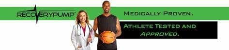

ADVANCED RECOVERY FOR EVERY ATHLETE
Sequential Compression is proven therapy through scientific study, research and experience, both in the medical field and Sports Physiology. The RP therapy (gradient sequential pneumatic compression) is the only medically proven type of pneumatic compression to both accelerate recovery and increase athletic performance in subsequent exercise bouts
PHYSIOLOGY BEHIND MUSCLE SORENESS?
Muscle soreness occurs after high levels of exercise- primarily due to muscle cell microdamage and inflammation, which leads to the accumulation of lactic acid, creatine and other metabolic waste the body cannot clear completely during exercise.
Simply put, the increasing accumulation of waste and water in the muscle after exercise causes a decrease in performance and an increase of muscle fatigue. These elements must be removed via the venous and lymphatic system to efficiently recover the muscle.
How does the Human Body Removes Metabolic Waste?
Our lymphatic system and blood vessels work together to flush waste from our cells naturally. Muscular movement however is needed to stimulate this process because the lymphatic system does not have a pump, like the heart. Often athletes will perform light exercise to achieve this muscle contraction and increase circulation in the body, thereby reducing soreness in the muscles
RecoveryPump Expedites Muscle Recovery
Although the human body naturally excises waste causing soreness and fatigue, this takes time. RecoveryPump delivers serious athletes an aggressive but very natural alternative to passive recovery that far exceeds the results achieved from many traditional modes of recovery. Our system simulates localized “active recovery” in a passive manner because the therapy is conducted at rest.
How it works
Sequential intermittent pneumatic compression like the RecoveryPump increases venous return, rapidly accelerating the body’s reabsorption of the elements causing soreness and fatigue in the muscle. Specific levels of compression measured in mmHg, increase circulation at all levels of the venous system, Deep Veins, Saphenous veins, Superficial and Perforator veins, effectively removing metabolic waste faster than any traditional mode of recovery or rest alone.
The Benefits of RecoveryPump:
- Easy to Use – Tired athletes have no excuses!
- Small & Durable – Travel with it!
- No complex users manual/programming
- Adjustable Pressure & Pause settings – Simply set to personal preference/comfort
- Convenient zipper closure- fast in/out time
- Superior sequential compression- offloads the entire leg with each cycle
- Custom RecoveryBoots sizing for accurate fit and optimum results
- Unique foot design compresses the bottom of the foot for increased circulation
When do I use the Recovery Pump?
Every athlete has different training plans and the RecoveryPump system can adapt to that. The ultimate goal is to use the RecoveryPump system daily, when it’s convenient for you.
Pre-Training
Use the recoverypump before trainging or competitionfor 15-20 minutes to get blood moving and begin to dilate the vascular system. The effec is very similar to a warm-up jog but can be done at rest, without wasting valuable energy stores. Adjust pressure to perrsonal comfort but we recommend 60MMHG for this 15-20 minut active recovery warm-up
Immediately aftera workout
After a workout(while the vascular system is still dilated), We recommend 30-45 minutes use. If you decide to go about your daily activity and useit at the end of the day, 1 to 1.5 hours is recommended.